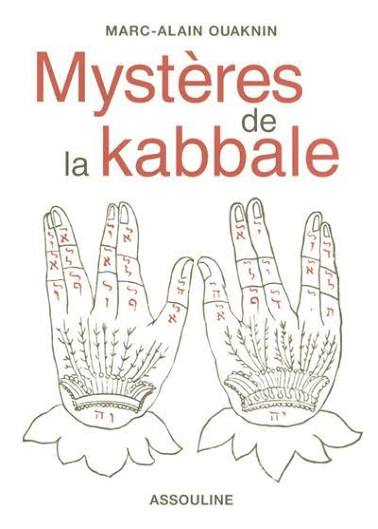
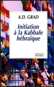
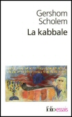

|
Les mots sont comme des oiseaux, pourquoi les laisser enfermés dans des cages ? Rabbi Nahman de Braslav |
Sources bibliographiques
Mystères de la Kabbale
Marc-Alain Ouaknin (Editions Assouline, 2000)

“Malheur à moi si je révèle ces mystères et malheur à moi si je ne les révèle pas” est-il écrit dans le Zohar, texte majeur de la mystique juive. La Kabbale est la face secrète, ésotérique, du judaïsme, dont la Bible représente la forme dévoilée. Un immense univers, dont Marc-Alain Ouaknin nous ouvre les portes : schémas fondamentaux de l'organisation du monde, structure de l'homme primordial, méditation sur les lettres de l'alphabet et les noms de Dieu, perception de la "lumière-vie-énergie" qui circule en toutes choses, et aussi aperçus historiques, parallèles entre la Kabbale et la thérapie, exercices proposés pour la méditation...Citations, anecdotes, schémas, illustrations (en noir et blanc), sous-titres abondants, maquette aérée, d'une élégance sobre, typographie très claire, avec un jeu intéressant entre le noir et le sépia, tout est mis en oeuvre pour dynamiser la lecture, faciliter l'approche de ce sujet indubitablement ardu. (Colette-Rebecca Estin - amazon.fr)
Initiation à la Kabbale hébraïque
Adolphe D. Grad (Editions du Rocher, 2001)

Kabbale... mot mystérieux véhiculé par les Hébreux, qui ouvre les sentiers d'une spiritualité débordant le lit de l'hébraïsme pour atteindre l'universel.Adolphe D. Grad, l'un des plus grands spécialistes de la Kabbale, a rédigé une passionnante initiation aux principaux thèmes de cette science sacrée Bible, Zohar, Cantique des cantiques, circoncision, virginité, golem, carré magique... Autant d'indices, autant de points de repères sur la voie de la Kabbale. (Editions du Rocher)
La Kabbale
Gershom Scholem (Gallimard - Folio Essais, 2003)

Gershom Scholem donne ici toutes les clés nécessaires à la compréhension de la Kabbale, ce courant mystique, né dans l'Antiquité, et qui a trouvé sa forme définitive au XXe siècle. Les concepts sont exposés avec une clarté d'expression étonnante au regard de la complexité des œuvres et des thèmes abordés. Ce livre constitue donc un état des connaissances en matière de mystique juive.De cet ouvrage, en forme d'invitation au voyage, ressort la quête d'un judaïsme de la liberté où le souci de la fidélité à la tradition ne se referme jamais sur lui-même mais ouvre sur un monde où l'utopie est présente. (Editions Gallimard)
Liens Internet
Journal des Etudes de la Cabale
Le Journal des Etudes de la Cabale est une revue en ligne dédiée à la recherche dans le domaine de la cabale, ancienne ou contemporaine. Elle accueille des articles, des comptes-rendus d'ouvrages, et diverses ressources bibliographiques, ainsi que des archives regroupant des textes précédemment publiés sur papier et des travaux d'étudiants chercheurs (mémoires, dissertations). Elle annonce les colloques, les séminaires universitaires et les événements de la vie de la recherche. La revue est accessible sans mot de passe et consultable à volonté. (Comité de rédaction)
Ce portail dédié à la Kabbale se veut un lieu d'échanges, de commentaires, d'études, de connaissances partagées, dans la joie et la bonne humeur. Nous voulons, par le moyen de l'Internet, laisser la possibilité d'interagir avec les textes, de les commenter et de les re-lire, voire de les re-dire, afin de dégager un sens au-delà du sens. Notre vœu est aussi de partager notre Amour de la Kabbale par le moyen le plus moderne qui soit, il est ouvert à tous, débutants ou étudiants confirmés. Toute question est un germe de questionnements infinis, il n'y a pas de "bêtes questions", juste des silences qui tuent la réflexion... (Prospéro, webmaster)